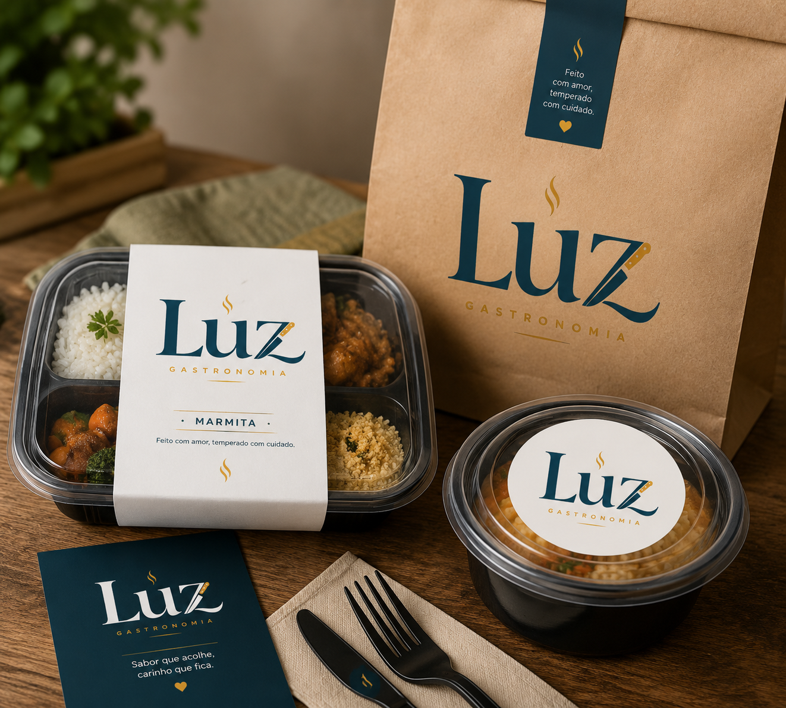
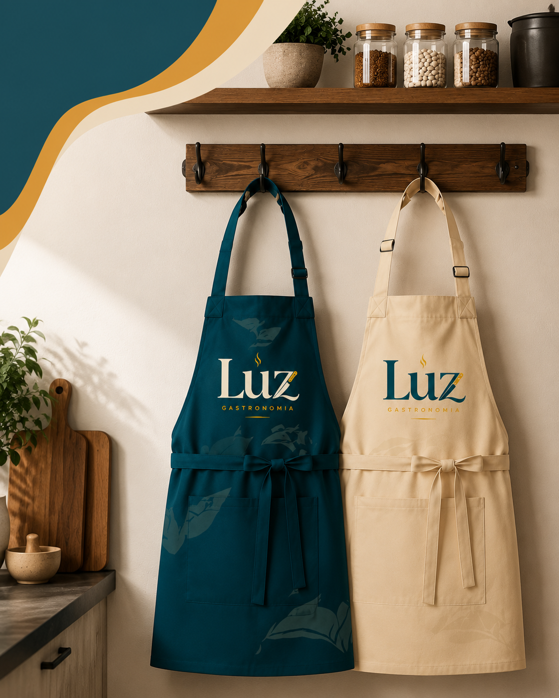

Escolha seus pratos
Monte seu pedido entre as opções do dia.
Gastronomia que acolhe
Pratos preparados com afeto, ingredientes selecionados e o cuidado de uma cozinha que entende sua rotina.
Ver cardápio →
Monte seu pedido entre as opções do dia.
Receba suas escolhas prontas para aproveitar.
Mais praticidade, sabor e carinho à mesa.
Monte do seu jeito
Escolha suas refeições favoritas e deixe a praticidade cuidar do seu dia.
Do freezer para a mesa
Para garantir o melhor sabor, textura e qualidade das nossas refeições, escolha o método que combina com a sua rotina.
Opção 1
Opção 2
Opção 3
Da nossa cozinha
Na Luz, cada receita nasce de ingredientes honestos e de uma vontade simples: deixar a sua rotina mais leve, gostosa e cheia de afeto.
Conheça nossas escolhas →Detalhes que encantam
Uma experiência pensada do preparo à sua mesa.
